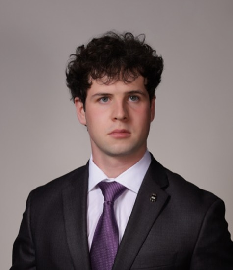
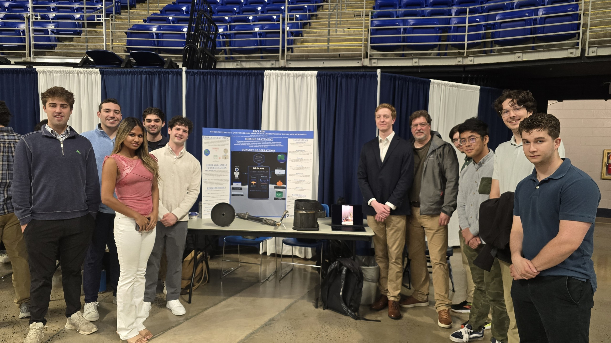
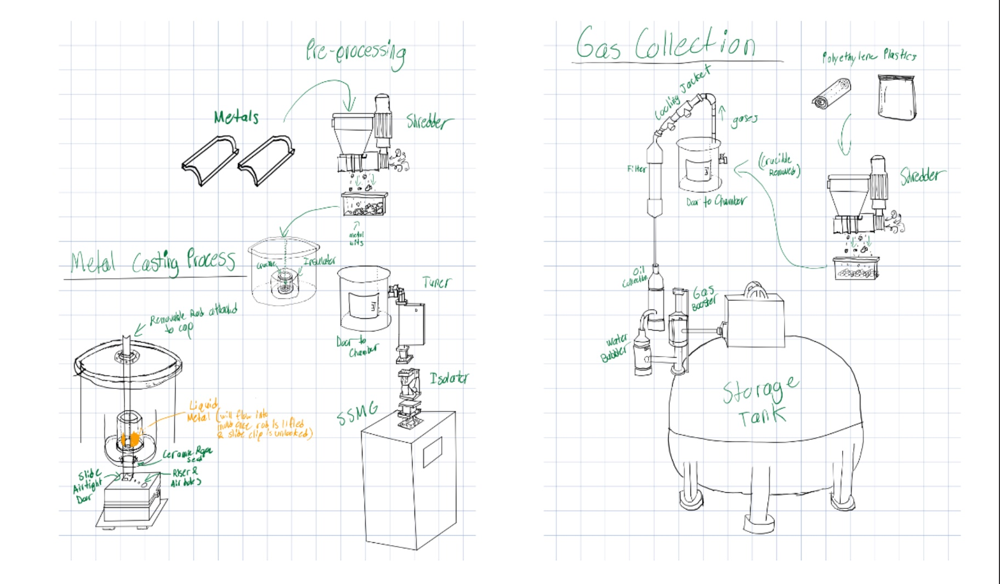
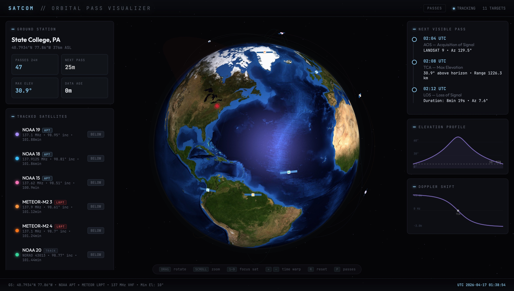
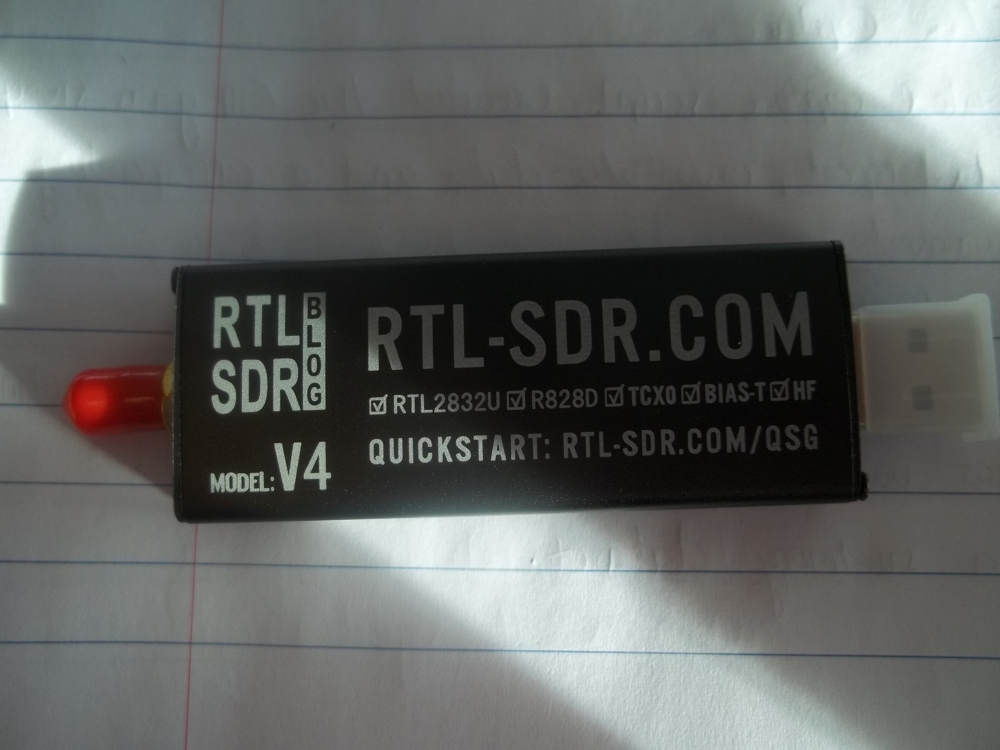
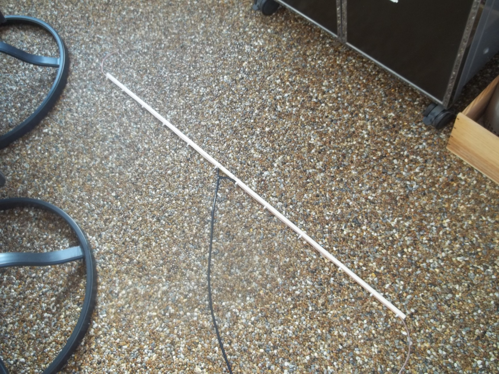
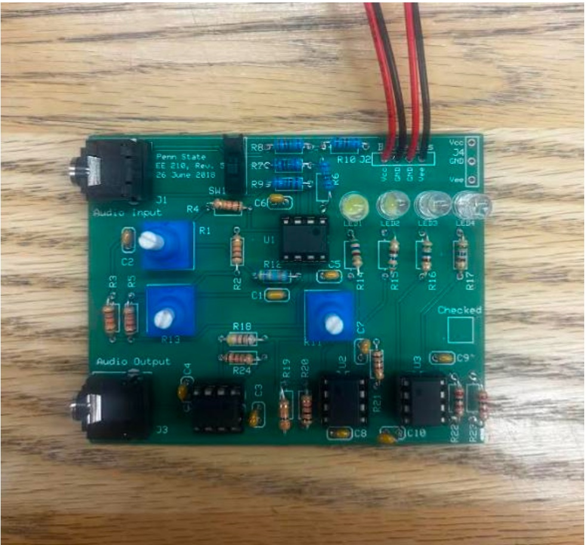
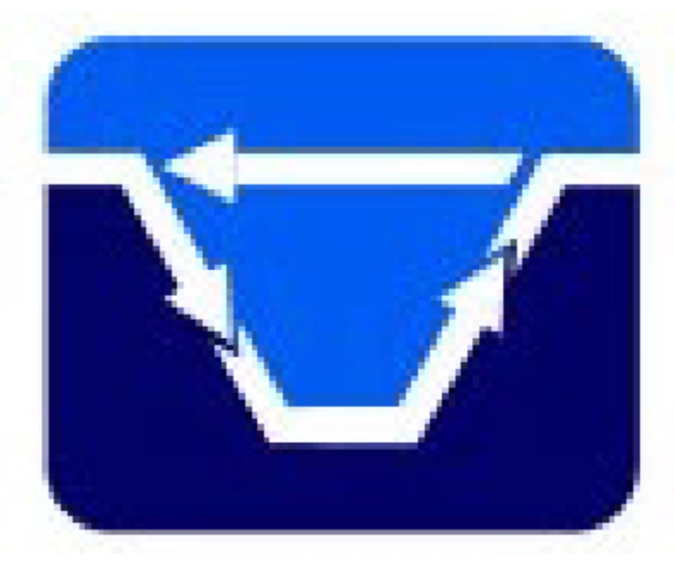

SYSTEMS ENGINEERING · RF & SIGNAL PROCESSING · SPACE SYSTEMS
I'm a junior in Engineering Science at Penn State with a minor in Engineering Mechanics and a Certificate in Space Systems Engineering. I build systems that bridge hardware and software — from custom RF receive chains and analog circuits to ML pipelines and 3D mission control interfaces.
My work lives at the intersection of formal systems engineering and hands-on hardware. I co-lead systems engineering on a NASA LunaRecycle team competing in Phase III (prize ceiling $1.2M), operate an autonomous satellite ground station I built from scratch, and run verification campaigns on RF hardware I solder myself. I care about traceability, measured performance, and shipping things that actually work.
This summer I'll be joining Millennium Space Systems (Boeing) as a Spacecraft Systems Engineering intern.

End-to-end systems from concept through verification, built with real hardware and measured performance.


RECLAIM is a microwave-based in-situ recycling system designed for lunar surface operations. Under Penn State's Student Space Programs Lab (SSPL), the team is developing a closed-loop platform that converts inhabitant waste — aluminum, polyethylene, Nomex, textiles, foam, and rehydratable pouches — into reusable feedstocks. A 6 kW GaN solid-state microwave generator (RFHIC) with a HOMER STHT autotuner drives a WR340 waveguide that is time-shared between two reaction chambers: an HFSS-validated cylindrical metals chamber (16 cm radius, 26.4 cm height) with SiC susceptor and alumina drain-plug gravity casting, and a 12" tri-clamp pyrolysis spool running ZSM-5/SiC packed bed at 750°C under 10–15 kPa vacuum, with concentric-tube condenser and Tedlar gas capture for syngas, bio-oil, and char outputs.
The team won $50,000 in NASA's LunaRecycle Phase II; I joined after that win and stepped into the co-lead systems engineering seat for Phase III (prize ceiling $1.2M, demonstration July 2026). I own the architecture, requirements flowdown, concept of operations, and cross-subsystem integration; the team has already presented PDR (April 23) and the Learning Factory Capstone Showcase (April 28). RECLAIM inherits directly from SSPL's SMELT program (BIG Idea 2023, >95% Al recovery) and is designed as a plug-in application for Dr. Bilén's ILUMEN lunar-microwave economy architecture.

Solo-built autonomous ground station for NOAA APT and METEOR LRPT weather-satellite image reception. Custom VHF antenna, SAWbird LNA, RTL-SDR v4, and a full software pipeline spanning orbital prediction (SGP4), real-time RF capture (C++), APT/LRPT signal decoding (FM/AM and OQPSK → Viterbi → CCSDS → Reed-Solomon), and ML-driven mission planning. A browser-based 3D mission-operations interface built with Three.js tracks 11 spacecraft across 5 constellations — NOAA, METEOR, ISS, Terra/Aqua, and Landsat — with live AOS/TCA/LOS prediction, elevation profiles, and Doppler shift.


End-to-end FM-band RF receive system: custom-fabricated dipole antenna (coax feed, SMA interface, empirically tuned length), MATLAB DSP pipeline using comm.SDRRTLReceiver, and a structured five-stage verification campaign (V0 SDR sanity → V1 end-to-end RF → V2 orientation/placement sensitivity → V3 FM demodulation with intelligible audio recovery → V4 quantitative gain-sweep characterization). Receiver behavior quantified via PSD peak, noise floor, and SNR-like metrics. All results from physical hardware, not simulation.

Five-block analog audio system: stereo mixer with karaoke vocal cancellation, Baxandall tone control (bass/treble shelving), variable volume stage, 4-level LED VU display, and headphone output buffer. Designed in Multisim, prototyped on breadboard, fabricated onto PCB with LF412CP op-amps, verified through bench testing with function generator and oscilloscope.
Sole developer on an X-ray preprocessing pipeline (Python + MATLAB, feature parity) for a frost-formation imaging proof-of-concept under Prof. Vishwakarma. The pipeline ingests raw multi-page TIFF stacks from a veterinary X-ray detector and produces clean, contrast-enhanced 16-bit grayscale frames as input to a downstream ML model: auto-detection of usable frames, flat-field correction, percentile normalization, CLAHE/gamma contrast enhancement, and signal-averaging stacking. Surfaced and worked around several upstream acquisition issues (zero-data dark frames, corrupted TIFF headers, mislabeled JPEG-as-TIFF) without silent failure.
Prior work at HEATER: designed and procured an experimental setup for non-invasive frost imaging using thermal and optical sensing; LabVIEW DAQ for supercritical CO2 loop instrumentation; staged integration of accumulators, thermocouples, and sensors into a two-phase heat transfer loop; system-level modeling of Navy chiller systems.

Confirmed senior thesis under Dr. Sven Bilén on a software-defined radio implementation of a lunar penetrating radar, building on Dr. Bilén's lunar microwave economy work and on the autonomous ground-station and SDR signal-processing projects. The work is analogous to current sub-surface lunar imaging research (e.g. Chang'e LPR heritage) and aims to leverage modern SDR architectures for a more flexible, lower-mass instrument. Targeting completion in the 2026–27 academic year.